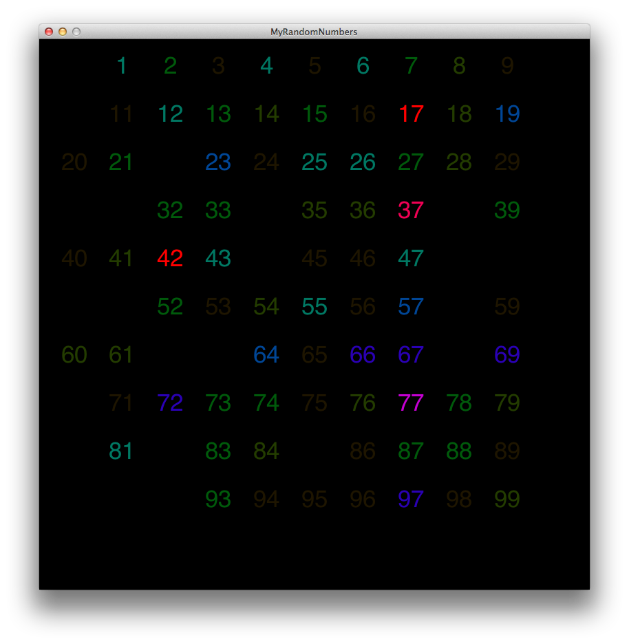

In this section, I'll be discussing one of the most important, yet often overlooked, topic of data mining: the data. I'll be examining four major sub-topics: Data Set and Attribute Types, Data Quality, Exploring Data, and Visualizing Data. One of the most important things a data miner can do when handed a new dataset is to sit down and actually explore the data that they have been presented. In order to understand what the data means, it's important to understand just how data is classified. The goal of this section is to do just that - give an explanation of how data is, or can be, structured.
As mentioned in the introduction, one of the most often overlooked aspects of data mining is the data itself. Data can be described by Yong Bakos as known facts that are recorded and meaningful. Unfortunately this definition does not detail how data is described. It can be said that a data object is an individual piece of data that describes something. A data object can use several attributes to describe itself. When several data objects are put together, we have a data set1.
There are two different categories of attributes used to describe data: categorical, or qualitative, and numeric, or quantitative. Within each of these categories, there are two types of attributes: nominal, ordinal, interval, and ratio. Qualitative attributes may use numbers, but they aren't concerned with the properties of the numbers themselves, they are used merely as symbols to represent something else. Quantitative attributes, as you can imagine, are just the opposite. Numbers are numbers and that means that they are freely available to be manipulated or analyzed. I'll talk about each of the sub attributes in the following sections.
Nominal attributes preserve 1:1 mapping. That is, they ensure that the value stored represents exactly one thing, be it a zip code, student identification number, eye color, or gender. When comparing these values, we're only looking to see if two nominal attributes are equal or not equal.
Ordinal attributes value the order objects. The order is essential to the attributes value and it must be preserved. These values can be transformed as long as the order remains the same. When comparing ordinal attributes, we're primarily concerned whether a value is greater than or less than another value. When examining these attributes, we often look at medians, percentiles, and run tests. Some example ordinal attributes are hardness, grades, and street numbers.
Interval attributes are concerned with scale. They can be transformed through simple linear functions. These attributes are concerned with the value of their sign and the unit of measurement. Some common interval attributes are calendar dates, and temperature in Celsius and Fahrenheit.
Ratio attributes operate independently of units, but are concerned with maintaining two attributes ratio to each other. Operations commonly preformed on ratio attributes are multiplication and division. We are commonly concerned with their geometric and harmonic mean as well as percent and variation. Common examples include: temperature in Kelvin, money, age, mass, length, and other SI units.
Just as attributes have several different categories, data sets can also be split into sub-categories. These include record data, graph-based data, and ordered data. However, it's important to understand some general characteristics of data sets. There first characteristic of note is dimensionality, that is, how many attributes a given data object has. The next characteristic is sparsity, or how many attributes are 0. Sparse data becomes important in market basket research and some types of similarity metrics. Lastly, there's resolution, a metric describing how fine the data is measured.
Record data is one of the most basic forms of data storage. Often times there is no explicit relationship between two records and they all have the same attributes2. There are three major types of record data sets: market basket data, data matrix, and sparse data matrix. The market basket data is used to represent what customers buy at stores in order to determine what, if any, relationships are present in the different products. Market basket data is often sparse (attributes mostly 0, false, null, etc), and usually binary, however it can be continuous. The data matrix is record data with attributes that are numeric, therefore it is possible to preform some form of matrix manipulation. Lastly, the sparse data matrix is simply a data matrix with, like the market basket, most attributes having a zero, or empty, value. This opens the door to several interesting matrix operations that weren't available in non sparse matrices.
Unlike record data, graph-based data looks at records where there is a relationship between data objects and that relationship is relevant to the data mining process. Graph-based data often have entities represented as graphs.
Ordered data, like it sounds, deals with data objects that have attributes that deal with position in time or space. There are four types of ordered data: sequential, sequence, time series, and spatial data. Sequential data is also known as temporal data and is essentially a record data object with a timestamp on it. Temporal data allows retailers to analyze just when people buy certain products as well as what they buy around the same time. This can be useful during the holiday months and the release of new products. Sequence data that is a string of individual entities. Unlike sequential or temporal data, sequence data doesn't have a time stamp associated with its data, only the data's position in the set is important. Time series data is a subset of sequential data, but instead of having only one associated with each data object, it has several. Each attribute holds the value of a different timestamp. This brings up an interesting side effect - temporal autocorrelation. Temporal autocorrelation means that two measurements that are taken close together will often have similar values. The fourth, and final, type of ordered data is spacial data. Spacial data has attributes that describe its location or area. Spacial data introduces the idea of spatial autocorrelation, which, like temporal autocorrelation, states that two objects that are physically close together will often have similar characteristics.
When mining data, it is important to consider the quality of the data you're presented. It pays to be inquisitive about the origin of the data and its collection as often times data that is collected incorrectly and is mined will yield unhelpful results. For this reason this reason, we now look at some data quality issues.
One of the most common problems with mining a particular set of data is that it may have been collected for some other purpose besides analysis. On the surface, this may not sound like the worst thing in the world, however it brings to light some interesting implications; namely, what relevant information was missed? Data collected for other purposes may have missed some key information that would help tie the data together simply because that data was not viewed as necessary.
Another, related, issue is when data is collected, but without a specific application in mind. Like the previous point, this can lead to some serious vacancies in relevant, and telling data. Additionally, the way the data is collected may not be appropriate for the application later on. I am referring to the case of extremely high resolution. Sometimes, it pays to take a step or two back from the data to get a "big picture" look at the information. That is, on a cosmological scale, it's generally accepted that the Earth's round, however, on our scale it's practically flat, and more importantly, never planar. These different perspectives may alter the resulting data.
Errors arise all of the time in data collection; it's important to be aware of them when mining the data. What's also essential is working in just how to deal with them when collecting data as that will often have a large impact on the outcome of the data mining. Sometimes errors cannot be addressed at the source of the problem (ie. a piece of machinery fails), and the data that was recording must be discarded.
Duplicates in data collection is a common problem. Often these can be easily removed, however, that's not the case when we are presented with "almost-duplicates", or data objects with very similar attributes. It can become difficult to determine whether or not individual data objects are in fact referring to the same data object. If a data miner is able to determine that two objects are referring to the same object, they, and their attributes should be merged if possible, if not then they should be reserved.
Sometimes, when mining data, we have to rely on data generated from human users. This can present a problem, as people are often prone to interruptions, excluding precise details ("went to bed at 11 PM", not "went to bed at 10:53 PM"), and are unsure how to account for and adjust when something goes wrong3. This can be remedied by making data input as simple as possible. "It should be unobtrusive, intuitive, and easy to access so that it is more likely that data collection becomes a part of the daily routine" (Segaran, 4). In the end, quality data can be defined as having three characteristics: timeliness, relevance, and documentation.
The first thing you should do upon receiving a data set is to open it up and start exploring the data. Most data files do not simply contain numbers, they are often accompanied with an abstract or summary of the data by the "authors" of the data. In this summary, you'll often find attribute explanations, gathering techniques, publication dates, as well as other relevant meta-data. While exploring, you should be noting the attributes of each data object and how they're represented.
After you've familiarized yourself with the data at hand, the next step to take is generating some summary statistics. Summary statistics, as the name suggests, provide various statistical evaluations of the data set. Common one's include
Visualizing data can be described as displaying data in a graphical format. Yet, most would agree with me when I say that there is so much more to it than just that. Data visualization should convey meaning and inspire some sort of action. Visualization fits into the data mining process by inspiring action. If you've generated visuals of your findings effectively, they should be able to easily convey your results and at the same time, inspire those observing to use this new information in the future.
One of the tools used in this class was Processing. Processing allows for easy, java-like, environment for uses to visualize their data. I've included a sample project's code and result to help demonstrate just what Processing can do. The task was to ask a bunch of twitter users to pick a random number and report on it. The results were then mined and then used Processing to visualize the frequency of "random" numbers the twitter users picked. The relevant code looks something like this
/*
#myrandomnumber Tutorial
blprnt@blprnt.com
April, 2010
*/
//This is the Google spreadsheet manager and the id of the spreadsheet that we
//want to populate, along with our Google username & password
SimpleSpreadsheetManager sm;
String sUrl = "t6mq_WLV5c5uj6mUNSryBIA";
String googleUser = GUSER;
String googlePass = GPASS;
//This is the font object
PFont label;
void barGraph(int[] nums, float y){
//Make a list of number counts
int[] counts = new int [100];
//Fill it with zeros
for(int i = 1; i < 100; i++){
counts[i] = 0;
}
//Tally the counts
for(int i = 0; i < nums.length; i++){
counts[nums[i]]++;
}
//Draw the bar graph
for(int i = 0; i < counts.length; i++){
//fill(255, 255 - (counts[i] * 30), 0);
colorMode(HSB);
fill(counts[i] * 30, 255, 255);
rect(i * 8, y, 8, -counts[i] * 10);
}
}
void colorGrid (int[] nums, float x, float y, float s){
//Make a list of number counts
int[] counts = new int[100];
//Fill it with zeros
for(int i = 0; i < 100; i++){
counts[i] = 0;
}
//Tally the counts
for(int i = 0; i < nums.length; i++){
counts[nums[i]]++;
}
//Move the drawing coordinates to the x,y position specified in the parameters
pushMatrix();
translate(x,y);
//Draw the grid
for(int i = 0; i < counts.length; i++){
colorMode(HSB);
fill(counts[i] * 30, 255, 255, counts[i] * 30);
//rect((i % 10) * s, floor(i/10) * s, s, s);
textAlign(CENTER);
textFont(label);
textSize(s/2);
text(i, (i % 10) * s, floor(i/10) * s);
}
popMatrix();
}
void setup() {
//This code happens once, right when our sketch is launched
size(800,800);
background(0);
smooth();
//Create the font object to make text with
label = createFont("Helvetica",24);
//Ask for some list of numbers
int[] numbers = getNumbers();
//Draw bar graph
//barGraph(numbers, 100);
colorGrid(numbers,50,50,70);
//Generate some random number graphs to compare to
/*
for(int i = 1; i < 7; i++){
int[] randoms = getRandomNumbers(255);
barGraph(randoms, 100 + (i * 130));
}
*/
}
void draw() {
//This code happens once every frame.
}
This resulted in this image being generated

It's pretty clear from intuition that red or purple numbers are common. What we can easily extract from this visualization is that of the twitter users participating, most seem to have an affinity of selecting "random" numbers that end in 7. The obvious outlier here is 42, however, that can just as easily be attributed to the number's popularity as a result of Douglas Adams' book The Hitchhiker's Guide to the Galaxy.